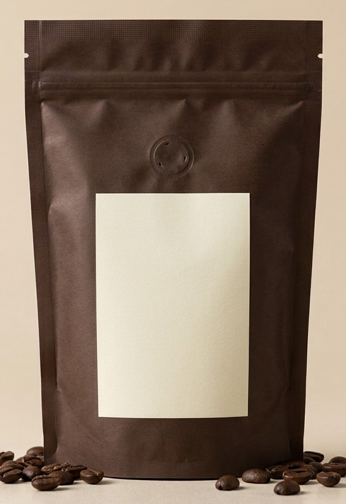
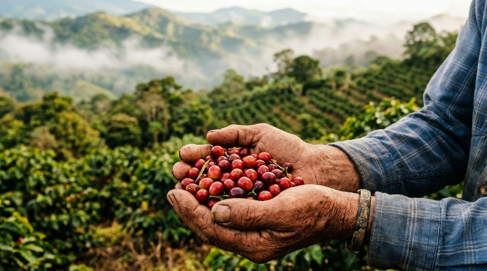

Café 100 % costarricense
Seleccionamos café de altura de distintas regiones del país y lo tostamos en pequeños lotes para conservar todo su aroma y sabor.
Nuestros cafés
Presentaciones de 340 g, en grano o molido a su gusto: fino para espresso, medio para chorreador o grueso para prensa francesa.

Notas a chocolate oscuro y frutos rojos, acidez brillante.
MedioAlturaDulce y floral, con notas cítricas y a miel.
ClaroFloralCuerpo redondo, notas a caramelo y almendra.
MedioBalanceadoIntenso, con crema densa y final a cacao.
OscuroIntenso
Nuestra historia
En Costa Rica al café se le llama "el grano de oro" porque ayudó a construir el país. Esa historia nos inspira a tratar cada lote con el mismo respeto: desde la finca hasta su taza.
Trabajamos directamente con familias productoras, pagamos un precio justo por su cosecha y tostamos en pequeñas cantidades para que el café llegue siempre fresco.
Elegimos granos maduros cosechados a mano en fincas de altura.
El grano se lava, se seca al sol y se clasifica por calidad.
Tostamos cada semana en lotes pequeños, controlando tiempo y temperatura.
Empacamos en bolsas con válvula para conservar el aroma hasta su casa.
Recetas
Club Grano de Oro
Regístrese y reciba promociones, nuevos lotes y un 10 % de descuento en su primera compra.
Visítenos
San José, Costa Rica
Lunes a sábado · 7:00 a. m. a 7:00 p. m.
+506 0000-0000
hola@granodeoro.example